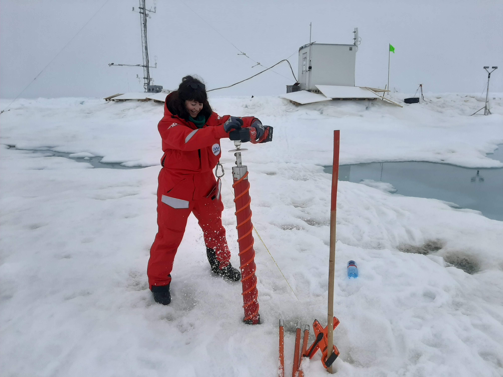
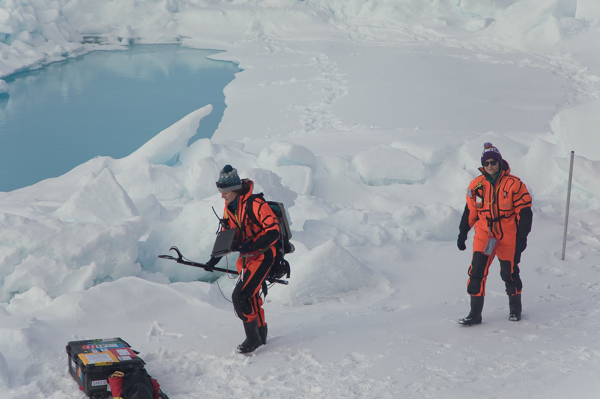
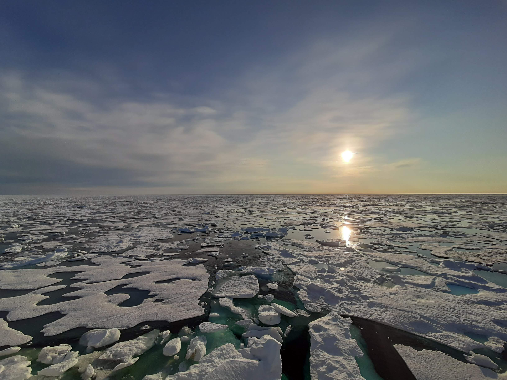
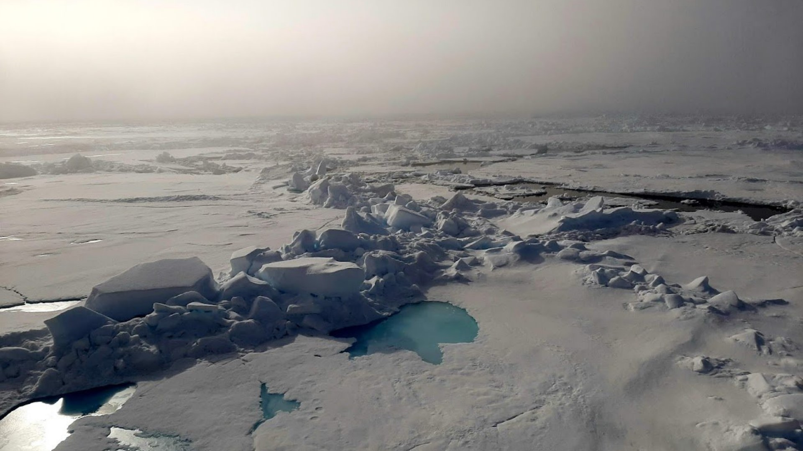

MOSAiC Expedition
Participating in the MOSAiC expedition was a defining experience in my research journey. Working on drifting Arctic sea ice, surrounded by a constantly evolving environment, brought a new perspective to processes I had previously studied only through satellite observations.
The experience highlighted the complexity of the ice–ocean system and reinforced the importance of connecting in situ measurements with remote sensing to better understand polar processes.
First Time on Sea Ice
My first experience on sea ice was both challenging and transformative. Moving from theory and data analysis to direct observation revealed how complex and variable the ice surface truly is.
That experience shaped how I approach my research today. It grounded my understanding of sea ice processes in real-world conditions and motivated my interest in linking physical observations with satellite measurements.